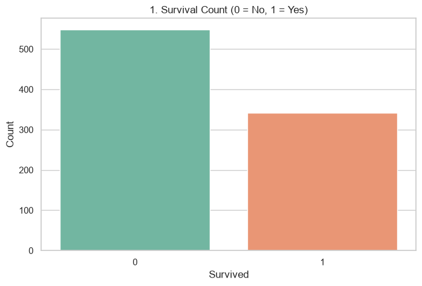
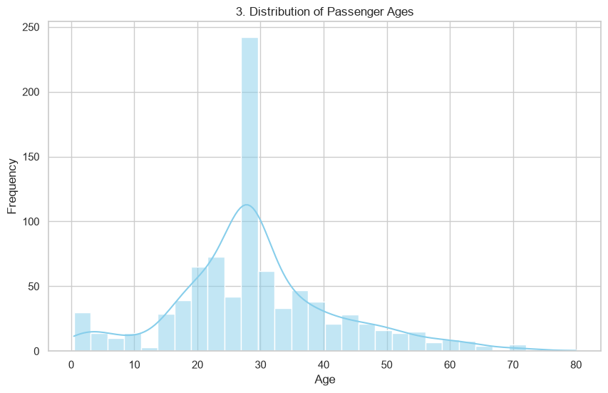
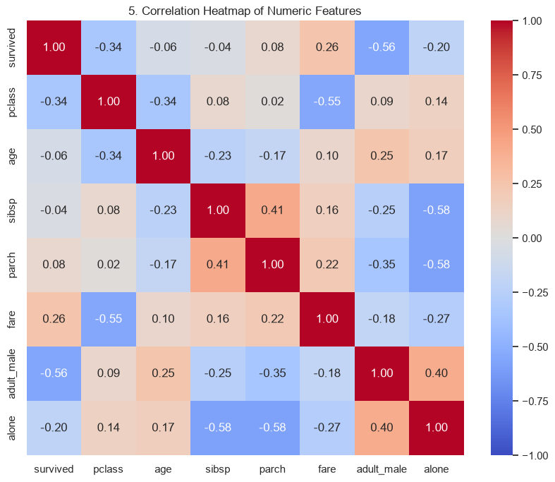

What this project delivers
Run the Titanic EDA pipeline to clean data, handle missing values, generate meaningful visualizations, and store the cleaned dataset in MongoDB. Then explore the dashboard locally with Flask.
5 charts
Survival, gender, age, fare class, and correlations
891 rows
Classic Titanic data with full cleaning pipeline
MongoDB ready
Cleaned dataset stored for later queries
Note: This page is a static GitHub Pages preview. The Flask backend is available locally only at http://127.0.0.1:5000 when the server and MongoDB are running.
Visualizations
Survival Count

Survival by Sex

Age Distribution

Fare by Class

Correlation Heatmap

Deployment Ready
This project is ready for deployment on a cloud host such as Render, Railway, or Fly.io. The static preview here is ideal for GitHub Pages, while the Flask app provides the dynamic backend locally.